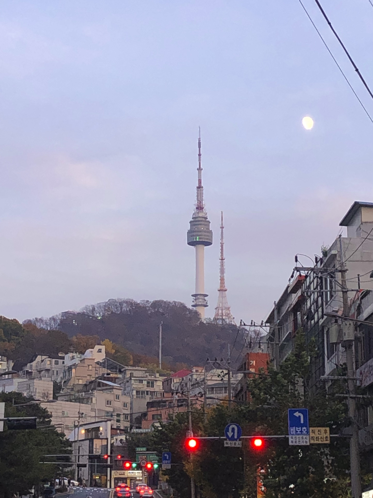
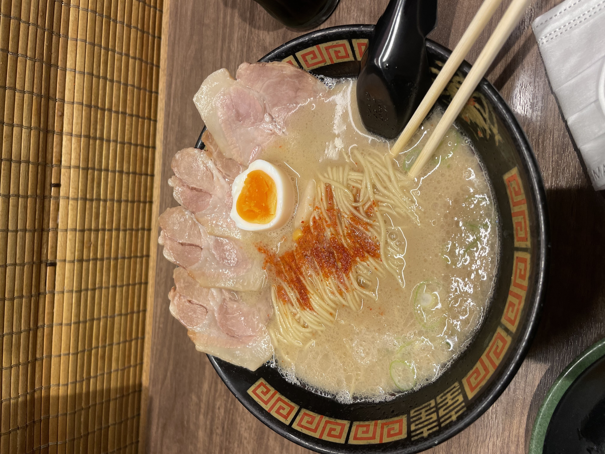
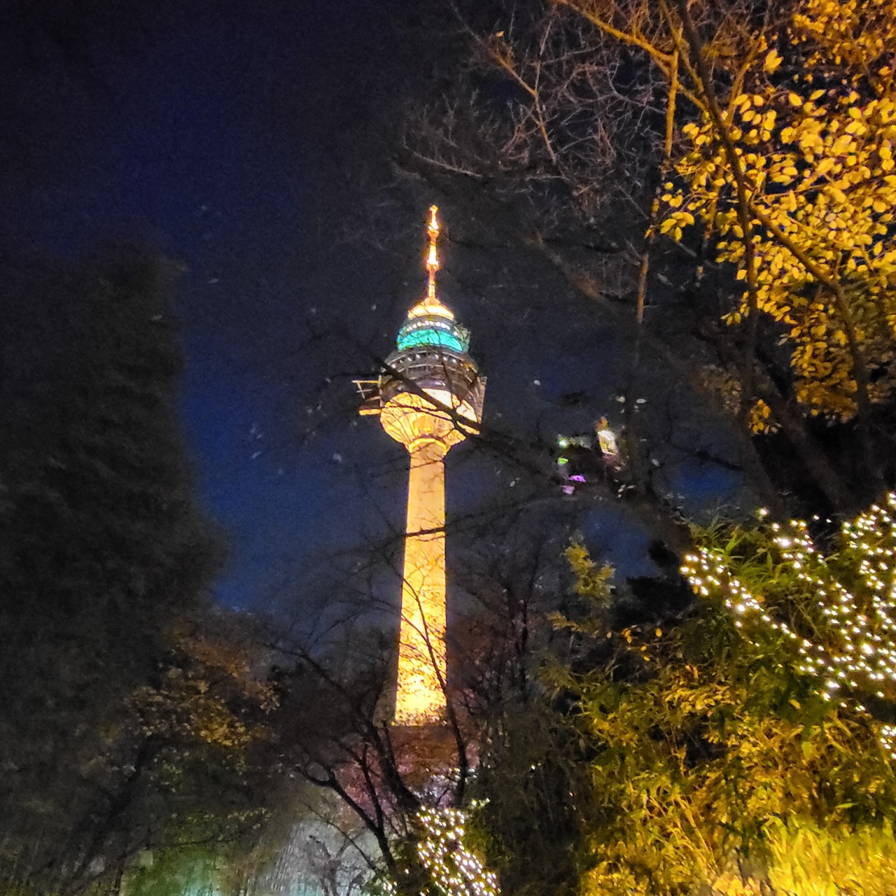

안녕하세요:)
제 이름은 이주영입니다.
저는 명지대학교 경영정보학과 4학년을 재학중입니다.
저는 수원에 삽니다.
수원에서 통학을 하기때문에 왕복 5시간정도가 소요됩니다.
저의 취미는 아래와 같습니다.
저는 여행과 아기들을 좋아하기 때문에 그와 관련된 유튜브 영상들을 많이 봅니다.
대표적으로 위에서 링크를 걸어뒀던 '빠니보틀'채널을 구독하여 봅니다.
그리고 저는 방학때마다 해외여행을 가기 위해서 열심히 알바를 합니다.
현재 맘스터치에서 일한지 5년차입니다.
햄버거집에서 너무 오래 일을 하면서 많은 햄버거를 먹었기 때문에 햄버거를 좋아하지 않습니다...
저번주에 마라맛과 탄두리맛 버거가 새로 나왔습니다. 저도 아직 먹어보지는 않았지만 맛이 있었으면 좋겠습니다.
저는 여행을 매우 좋아하지만 지난 2년간 코로나로 인해 해외여행을 다니지 못해 너무 아쉬웠습니다.
이번 여름방학때는 유럽여행을 가기 위해 예약을 거의 다 해둔 상태입니다.
제가 가본 여행지 중에 아래와 같은 곳을 추천드립니다.
| 국내 | 해외 | 희망지 |
|---|---|---|
| 여수 | 보라카이 | 스위스 |
| 포항 | 싱가포르 | 우유니사막 |
I like it!


